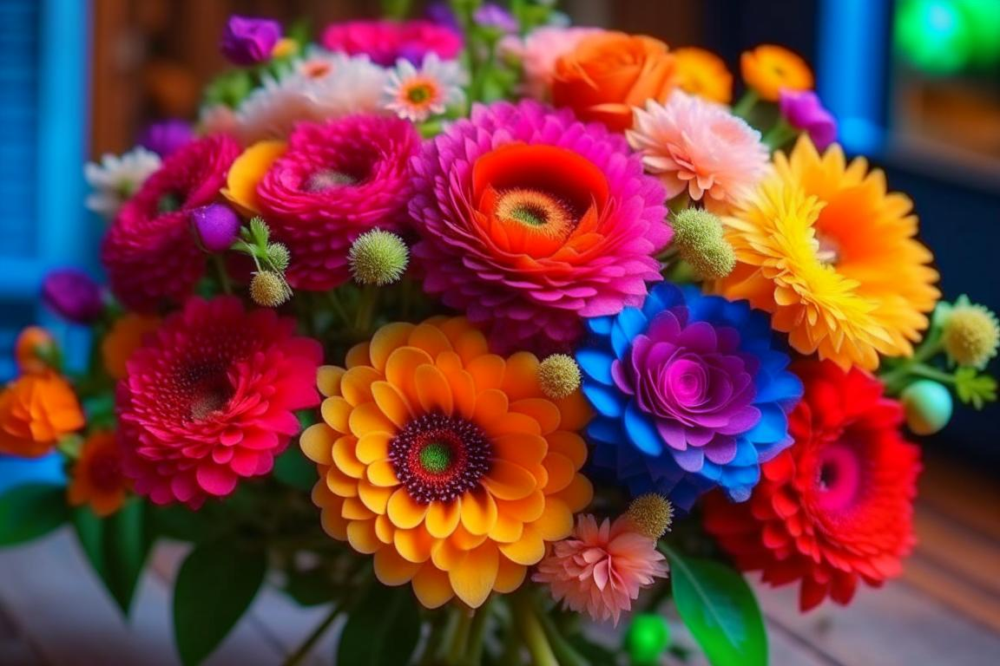

 Астры ассоциируются с осенним богатством красок, насыщенными оттенками и роскошными, благородными сочетаниями. В современной флористике эти цветы пользуются заслуженной популярностью, выступая базой для эффектных, модных композиций в самых разных стилях.
Самое главное, что нужно знать об уходе за срезанными астрами, это то, что они любят холодную воду. Чтобы обеспечить им комфортные условиях, достаточно в вазу ежедневно бросать по несколько кубиков льда. В остальном уход сводится к нечастому обновлению среза, контролю за своевременным удалением из букета увядших растений. Если для большинства растений губительно соседство с кондиционером или открытым окном, то для астр – это лучшая среда в комнатных условиях. Воды в вазе должно быть немного: цветок не любит повышенную влажность.
Купить астры можно на абсолютно любое торжество или мероприятие. Эффектная флористическая композиция из этих цветов запросто может конкурировать с работами из экзотических растений. Красивый букет из астр уместно презентовать на день рождение, учителю в знак благодарности, любимому человеку, маме, сестре, дочери. Темные оттенки астр великолепно выглядят в мужских букетах. Особенно интересно и небанально выглядит в букетах веточная кустовая астра.
Астра – единственный декоративный цветок, который удалось вырастить в Антарктиде (конечно, в условиях теплицы). Растение достойно переносит холода, хотя и восприимчиво к отсутствию света (в тени у него формируются менее крупные бутоны, а их окраска становится гораздо тускнее).